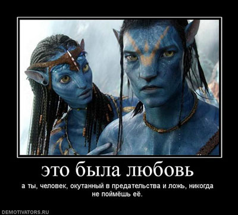

Побочное 3: Про любофф
Основную суггестию мы разобрали подробнейше, но фильм содержит суггестии поменьше, которые стоят упоминания. Талантливо снят, да.
«Сходила с сыном на "Аватар". Теперь знаю, что Джульетта может быть синей, четырехметровой, с круглыми желтыми глазами и хвостом, а Роме в натуральном виде ей по пояс и безногий. И это не мешает настоящей любви». © rubleuskaja
Подобных отзывов можно найти немало.
Можно, конечно, заняться анализом и обосновать, что как-то маловато было времени для настоящей любви. Особенно с учетом того, что психика-то у Джейка человеческая была как минимум изначально, и вряд ли его с ходу привлекали инопланетные самки. Да и как личности они друг друга мало интересовали — уже упоминал, что Джейк даже не рассказал своей типа любимой о том, как именно он функционирует в искусственном теле, да и ее как-то не особо интересовало это, хотя и знала, что он — человек. Так что максимум — влюбленность, которая и характеризуется (в отличие от действительно любви) как минимум частичным отключением мозгов (именно поэтому рекламируют в песнях, в фильмах, по ТВ и проч. именно ее).
Подробно объяснять здесь отличие любви от влюбленности не вижу смысла. Главное — это суггестия: «любофф оправдывает ВСЕ!».
Для чего делается — понятно, думаю.
Отношение к этому тезису? «Тараса Бульбу» я уже цитировал. Также рекомендую статью Свертыша «Про так называемую любовь».
Иллюстрация, до чего доводит влюбленность и в каких условиях она может возникнуть:
teaser_girl: «Есть у меня подруга — 24 года, москвичка, русская, практически своя квартирка-двушечка. Угораздило ее влюбиться до беспамятства в уголовника-чечена. Который еще сидит — но сидеть он будет недолго.
Картинка понятна уже? Мое мнение — и мнение людей старше и опытнее меня — ничем хорошим это не может кончится. Хорошо, если девочка жива и цела останется. Но комментарии мне поступают такие:
- спиши на неизбежные потери
- ты говоришь с трупом
Девочка, понятное дело, твердит, что он НЕ ТАКОЙ, что никто ситуацию не знает и судить не может, что ей вообще все равно».
«— Я его люблю
— серьезно
— Статьи у него за незаконное хранение оружия и нападение на сотрудников милиции. И я очень сильно уверена, что сидит он не за свое преступление
Катя Н: — вот его эти замашки ревнивые — уже о многом говорят
— Так он же кавказец, они все такие)
Катя Н: — это все греет душу канешна, но на практике — это реально страшно
— Не убивать же его за это
Катя Н: — ну вот я и грю — для жизни такое не надо
— Пусть. Я просто не буду давать повода
Катя Н: — он сам будет находить
Катя Н: — в том-то все и дело
Катя Н: — мась, я боюсь за тебя, если честно
— Катюнь, я тебе клянусь – мне сейчас все равно. Без него плохо. Я еще никогда не встречала более близкого и родного мне человека, чем он.
…
— Он уже сейчас говорит, чтобы я собирала манатки и переезжала в Грозный, к его матери
…
— Катенька, ну что может случиться?
Катя Н: — вот эти все разговорчики про "я тебя убью" — тоже опасно очень
— :-) он очень умный, это факт. Но ведь если мне нравится то, что он мной манипулирует, разве это плохо? Если я сейчас живу так, словно он мне муж, хотя я никогда не видела человека в глаза (из описания ситуации — познакомилась с этим зеком по переписке — W.), то, может, так и должно быть? Меня не напрягает то, что я перестала ходить на тусовки и отпрашиваюсь поехать к друзьям.
— Катюш, да я просто устала уже манипулировать сама. Мне хочется, чтобы рядом со мной был умный и сильный мужик, который сам знает, как лучше. Я всю жизнь сама себе хозяинка, я сейчас просто хочу расслабиться. Я что, до такой степени похожа на дуру? Этот "ангел с крыльями" всем еще даст просраться, и я не тешу себя надеждами, что вот он однажды станет хорошим. Для большинства людей он плохой, только вот для меня самый лучший. Мне другого и не надо.
— Я все понимаю, Кать. Правда. И знаю, что будет пиздец как трудно. Если будет, конечно, вообще что-то. В течение пары дней все станет ясно. Но если будет, то я сделаю все, чтобы этот носатик был со мной)
— Кто знает, может, мне отмерено всего 30 лет прожить? Так я хочу их провести так, чтобы было не жалко, а не сидеть на попе, смотреть с балкона на улицу и вздыхать. Я хочу любить, хочу страдать, хочу плакать и мучать себя и окружающих.
…
— О, это блин стандартное стереотипное мнение о всех посидельцах
Катя Н: — ты понимаешь, в чем дело - стереотипы к сожалению работают
— Мне все равно
Катя Н: — да я знаю — и это меня вымораживает напрочь
— Мне вот не нравится, когда всех чеченцев считают выродками и убийцами
— а всех русских-блядями
Катя Н: — ты понимаешь — статистика — упрямая вещь
— Да нет более лживой науки, чем эта ебаная статистика
Катя Н: — вот я как человек, который ее в работе использует могу тебе сказать, что это не так. Вика — я знаю, как хочется, чтобы было исключение из правил — но это нереально. Если что-то выглядит как утка, плавает как утка и крякает как утка — это скорее всего утка и есть
— Ну, хорошо. Пусть так. Потом мою историю будете детям рассказывать в назидание, мол, смотрите и не делайте так, как безмозглая девка Вика)
…
— Я решила принять ислам. Вот)»
При этом — обратите внимание! — эта Катя Н пишет влюбленной: «конечно, я надеюсь, что все будет хорошо — и ты знаешь, что я первая порадуюсь этому. Но сейчас мне только страшно». Т.е. по сути она не против того, что русская подруга собралась выходить замуж за чечена и принимать ислам — просто сомневается, что у зэка действительно любофф к наивной подруге. А вот если любофф на самом деле — то порадуется первой, ага…
Ну и довесок: «Почитала я тут подробнее про него в ее журнальчике — чечен еще и женатый, оказывается. Само собой, на чеченке. И двое сыновей уже есть. Чечен ласково обещает девочку убить, если она верность блюсти не будет».